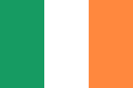

愛爾蘭
愛爾蘭的三色旗國旗背後代表了八百多年來與英國間的恩怨情仇：
綠色象徵愛爾蘭本土的蓋爾傳統，橙色象徵對英國傳統的追隨者，白色象徵希望雙方和平共存。
|
參觀三一學院
三ㄧ學院是前英國女王伊麗莎白一世贊助下興建，是歐洲歷史最悠久的頂尖學府之一。校園內教堂除了彌撒外也是熱門結婚場所，但只對校友開放，且是畢業五年內的才可以預約。期末考與結業式都在美麗的古典大會堂舉行，畢業儀式遵循古禮用拉丁文進行。學生宿舍在暑假期間會對外開放，可以上學校官網預約住宿。三一學院古圖書館哈利波特來取景過，十點後至少排半小時才能入場，另一大焦點就是保存凱爾之書，號稱是世界上最古老的手繪聖經本之一。
|
體驗愛爾蘭的酒吧文化
據說愛爾蘭酒吧文化是歷史下的結果。幾百年來被英國統治下受到很多不平等對待需要酒精解愁，釀酒業因為稅收高也被英國政府鼓勵。位於愛爾蘭的都柏林號稱有兩千家酒吧，到處都可看到歷史悠久各具特色的bar而且幾乎都是客滿，下班後去酒吧與同事朋友去喝一杯再回家似乎是個習慣。另一個特色就是現場音樂演奏與說唱或舞蹈表演，來杯當地著名的Guinness黑啤酒，聽音樂聊天喝酒吃當地菜餚甚至跳舞是很道地的都柏林體驗。
|
||||
|
Kilmainham Gaol監獄博物館
在都柏林主要景點中，西區的Kilmainham Gaol監獄是非常熱門的景點，參觀只能加入導覽不能自己走。Kilmainham Gaol監獄是愛爾蘭第一個現代管理的監獄，有個感人的故事是已經訂婚的Joseph在未婚妻哀求下在行刑前一天在監獄內成婚，現場也有保留許多槍決前夕留下的親筆書信。內戰後監獄逐漸被廢墟，因歷史意義被都柏林政府維修後改為博物館開放參觀。許多電影如以父之名都曾在這取景拍攝。
|
The Gaiety Theatre劇場
The Gaiety Theatre超過百年的歷史，各種演出在這裏舉辦培養了大量的藝術家。堅持呈現高品質的音樂和戲劇娛樂，每年的6月至9月愛爾蘭名劇《大河之舞》都會在這裏上演。Gaiety Theatre本身就是一個很美的劇院，由愛爾蘭舞蹈冠軍創立的Riverdance 結合傳統藝術與娛樂，表演中融合踢踏舞，芭雷舞，舞台劇，弗朗明哥，音樂演奏，美聲歌唱，中亞舞蹈，街頭舞蹈…..等不同元素。
|
健力士酒廠博物館
都柏林釀酒廠的開始，都柏林到處都是他家招牌，甚至紀念品店內也是他的各種商品。，獨特的倒酒儀式與特別的綿密泡沫與黑色咖啡班的濃醇口感都讓這品牌有鮮明的特性，把Guiness從原料取得，生產過程包裝到配送都用有趣生動互動的方式介紹，整個過程不是博物館講古或是單調的工廠生產過程，反而像是個遊樂館最後自己可以在酒吧自己倒一杯附送的Guinness享用。
|
|||